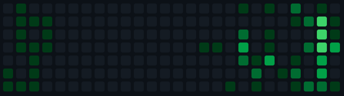
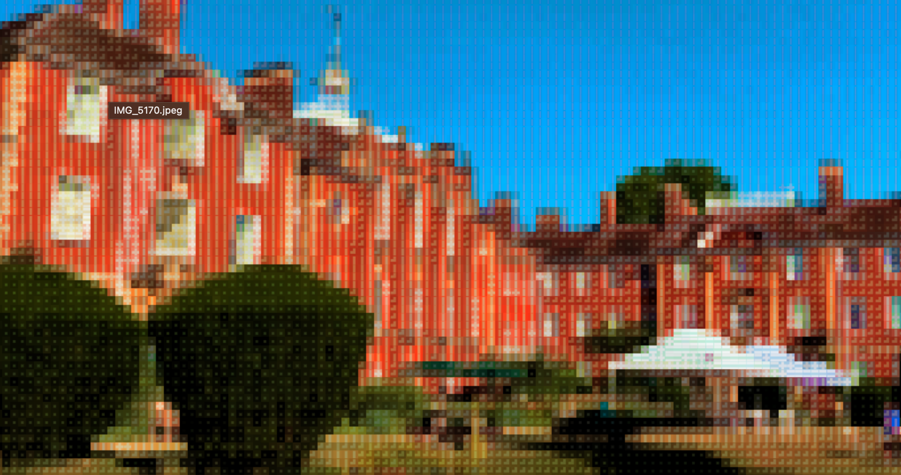
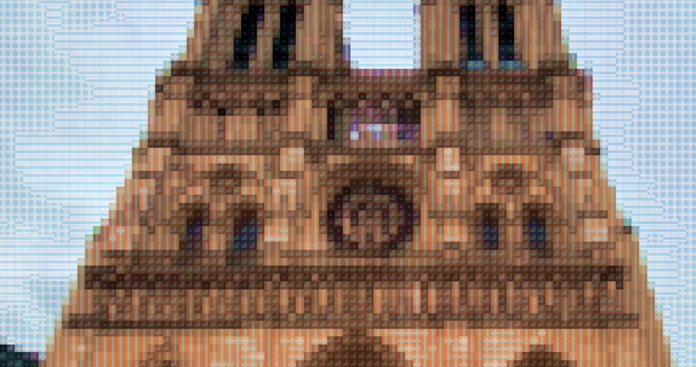
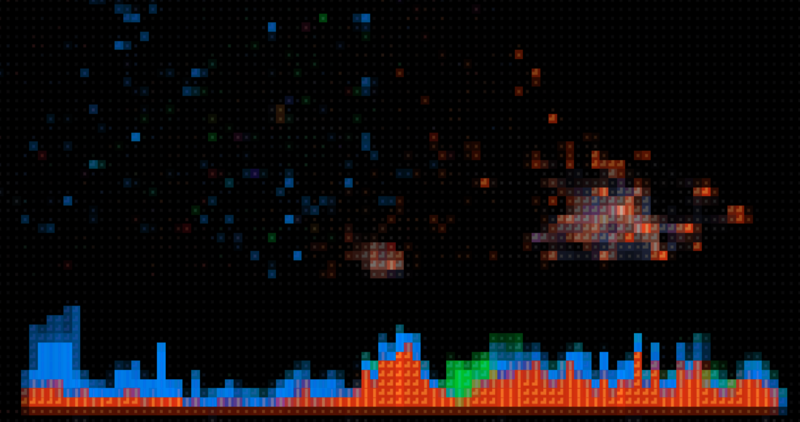

BEN BRYANT█

Welcome to my personal website. I am a second-year Engineering and Science student at the University of Queensland, passionate about technology, economics, and exploring the world. This site collects my projects, writing, blog posts from my travels, and professional experience. Navigate using the sidebar file tree or the section links below.
~/experience
I have had the opportunity to gain professional experience across several industries. Most recently, I completed an internship at Ubo Pod (January–February 2026), a smart home technology startup. Prior to that, I worked as an AI research intern at Edexia (September–October 2025), exploring applications of machine learning in education. My longest role was at Dualis International (March 2024 – June 2025), where I worked across trade compliance and international logistics.
~/education

I am currently in my second year of a Bachelor of Engineering (Honours) and Bachelor of Science at the University of Queensland, maintaining a 6.6 GPA. In the summer of 2025, I attended a three-week programme at Lady Margaret Hall, University of Oxford, studying Artificial Intelligence and Machine Learning: Theory and Practice, where I achieved First Class Honours with an overall mark of 88.67%.
~/blog

In mid-2025 I spent seven weeks travelling through Europe, from Dubai to Athens, across the Greek islands, through Prague, Berlin, Cologne, and Amsterdam, then to Oxford for the summer programme, and finally through Paris, the south of France, and down the Italian coast to Rome. I documented the journey in a series of email updates to friends and family, which you can read here.
~/projects

I enjoy building software that solves real problems. My projects range from Gena, an AI-powered voice collections system for Australian businesses, to Jarvis, a personal context assistant that integrates with Claude via the Model Context Protocol. I have also built Visulus, a B2B asset management platform, and Tdash, a terminal dashboard for monitoring tmux sessions and system resources.
~/writing
This section contains a selection of academic essays and assignments from my university studies, organised by subject. Topics span economics, physics, English, mathematics, and geography.